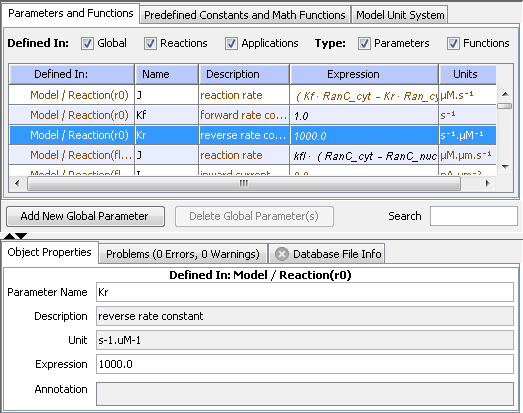

Users can define parameters to aid in modeling their virtual experiments or applications. User-defined parameters can be added at the physiology level either as global parameters or as reaction parameters. There are other predefined parameters such as species initial conditions, structure sizes or reaction rates for the different kinetic types that are generated as the model is being developed, for which the user has to provide values. The parameter values can be numeric or expressions involving other allowable variables in the model. Parameter values that are expressions are referred to as Functions in the Virtual Cell.

Viewing/Editing Parameters and Functions
Parameters and functions can be viewed by clicking the 'Parameters and Functions' node in the 'Navigation' panel tree structure. This displays the parameters in the 'View' panel on the right. Clicking the Parameters and Functions tab will display the model parameters in the table. The table shows the name, description, parameter expression and units of each parameter. In addition, the 'Defined in:' column indicates where the parameter is defined. 'Global' indicates that the parameter is a global parameter, defined at the physiology level. 'Model/Reaction(r1)' indicates that the parameter is defined in the model in reaction 'r1'; such a parameter cannot be used outside the reaction. 'App(application_name)' indicates that the parameter is defined in the application 'application_name'. Species initial conditions, compartment sizes, etc. fall under this category of parameters.
There are 2 sets of checkboxes above the parameters table allows the user to filter the type of parameters being displayed.
The user can edit parameter expressions and units by double-clicking the corresponding column in the table for the selected parameter. Alternately, selecting a parameter or a set of parameters in the table and right-clicking on the table shows a popup menu that allows the user to edit the expression or unit for selected parameter(s) in a text field. Note: the units can be changed only for user-defined parameters.

The Search text field below the parameters table allows the user to search for parameters in the table based on the search string entered by the user. The table is filtered to display those parameters that match the given search string.
Adding and Deleting Global Parameters
Clicking the Add Global Parameter button adds a default global parameter to the table. The user can edit the newly added parameter by clicking on the corresponding column in the table. Alternately, selecting the parameter in the table shows the Parameters Properties Pane in the 'Properties' panel below where the user can edit the parameter attributes. The Delete Selected Global Parameter(s) button is enabled only when the selection in the table is a global parameter. Selecting a global parameter in the table and clicking on the 'Delete Selected Global Parameter(s)' button shows a warning dialog warning the user that the global parameters are going to be deleted.

If any of the selected global parameters are used in other expressions in the model, clicking OK in the warning dialog pops up an error dialog listing those parameters that cannot be deleted. If the selected parameters are not used elsewhere in the model, clicking 'OK' in the warning dialog removes the global parameter(s) from the model.